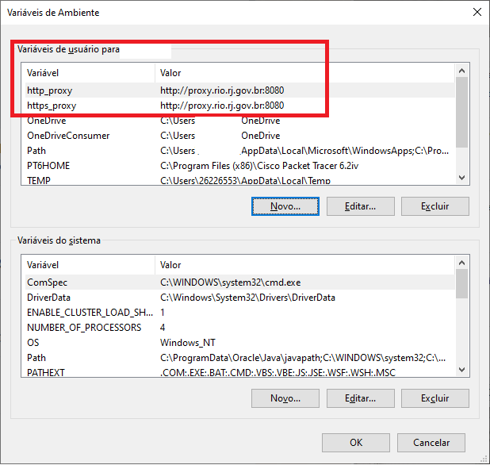

Como configurar a conexão do PowerBI com o BigQuery
Tendo problemas em se conectar ao BigQuery via PowerBI? Vamos tentar ajudar!
Restrições e premissas
Esse guia contempla somente o caso onde o usuário está tentando se conectar a partir da rede de computadores da Prefeitura do Rio. Se esse não for o seu caso, mas ainda estiver com problemas, entre em contato conosco, será um prazer te ajudar.
Também, o guia foi focado no sistema operacional Windows. Caso precise da descrição desses passos para outros sistemas operacionais, entre em contato com a IPLANRIO, que desenvolveu essa solução.
Configurando as variáveis de ambiente
Os passos necessários são os seguintes:
- Clicar na lupa da barra de tarefas
- Buscar por "Environment" ou "editar as variáveis de ambiente do sistema" e clicar no ícone que aparecer
- Clicar em "Novo" na seção da janela descrita como "Variáveis de usuário para..."
- Adicionar as seguintes variáveis:
- Nome da variável: http_proxy
Valor da variável: http://proxy.rio.rj.gov.br:8080
- Nome da variável: https_proxy
Valor da variável: http://proxy.rio.rj.gov.br:8080
- Atente-se para eventuais erros de digitação!
Ao final, a tela deverá se assemelhar à seguinte:

Observações finais
As variáveis atribuídas via Domínio serão identificadas na seção "Variáveis do sistema", que abrangerá qualquer usuário da máquina caso ela seja compartilhada. Caso a máquina que não esteja no domínio RIO também seja compartilhada, as variáveis também deverão ser criadas manualmente na seção "Variáveis do sistema" e não em "Variáveis de usuário".